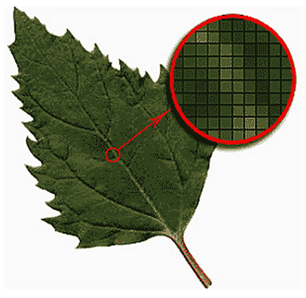
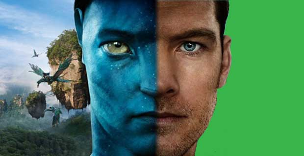

Растровые редакторы являются наилучшим средством обработки фотографий и рисунков, т.к. обеспечивают высокую точность передачи градаций цветов и полутонов.
Изображения, создаваемые в растровых программах, всегда занимают много памяти. По этой причине информация в файлах растрового формата хранится, как правило, в сжатом виде.
Растровые изображения невозможно увеличивать для уточнения деталей. Так как изображение состоит из точек, то увеличение приводит к тому, что точки становятся крупнее, что визуально искажает иллюстрацию. Этот эффект называется пикселизацией.
Применяется для обработки фотоизображений, художественной графике, реставрационных работ, работ со сканером.
Преобразования без искажений.
Маленький графический файл.
Рисовать быстро и просто.
Независимое редактирование частей рисунка.
Высокая точность прорисовки (до 1 000 000 точек на дюйм).
Редактор быстро выполняет операции.
Векторные изображения выглядят искусственно.
Ограниченность в живописных средствах.
Применяется в компьютерной полиграфии, системе компьютерного проектирования, компьютерном дизайне и рекламе.
Маленький размер изображения;
Картинка может быть сколь угодно сложной и увеличена в любое количество раз;
Можно составлять любые сложные фигуры с относительной простотой;
Качество картинки близится к фотографическому.
Большая нагрузка на вычислительные модули;
Технология мало где используется и мало инструментов для её обработки.
Значительный объем файлов
Программная зависимость
Высокая стоимость различных 3D редакторов
Реалистичность
Возможность использования трехмерных объектов для создания приложений (игр и т.д.)
Свобода трансформаций объектов
Используется при создании игр, фильмов и т.д.
